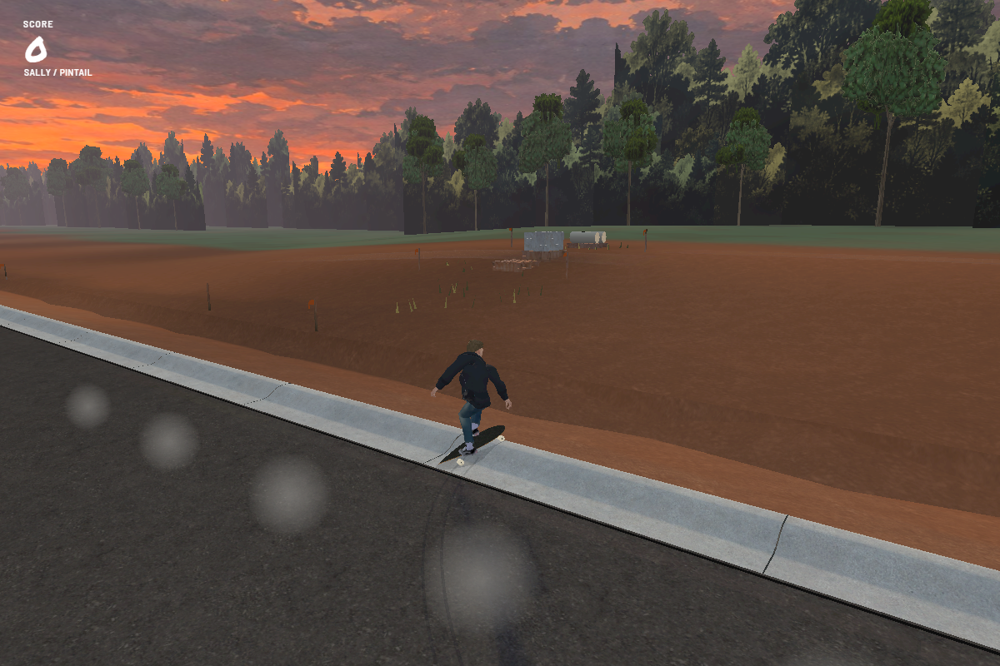
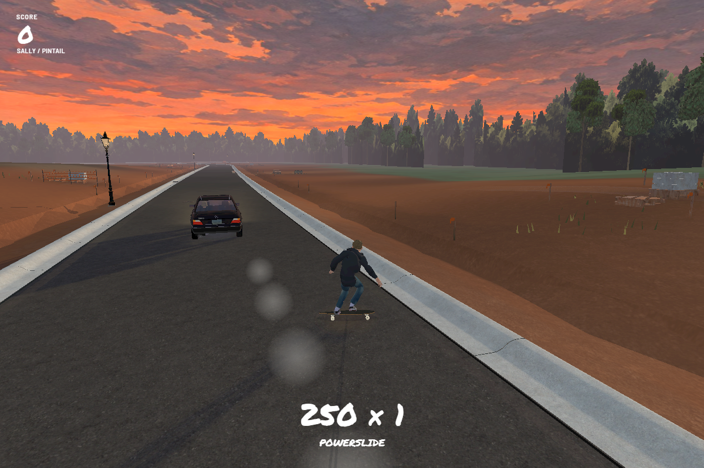

Build 169 · Pintail drift
Play Build 169 →
Choose the Pintail with Sally, Black or Dog. Carve firmly to throw the tail out, ease off to straighten and bank the slide. The same controls work while towing or free riding.
Same input · different board response
Build 168
Build 169
Still on the rope
The rider poses use the recovered THPS4 powerslide animations before their switch event. Holding the drift, forgiving grip recovery and scoring are adaptations for The Track.